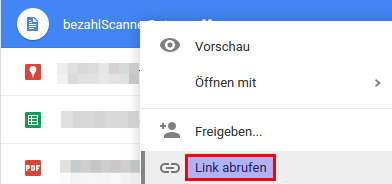
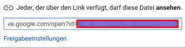

Where do I find the document id?
- Install the Android app and scan a QR-Code. The first time you use the app a bezahlScannerData.csv will be
created within your Google Drive account.
- Log in to your Google drive account
- Right click on the bezahlScannerData file and select 'Link abrufen/Create link'. A popup window will show
up.

- Select the id (all the content after "id=")
